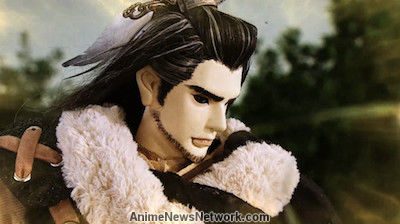

Set in an Eastern fantasy setting, Dān Fěi and her brother, guardians of a sword known as the Tiān Xíng Jiàn, are pursued by the evil Xuán Guǐ Zōng clan, who seek to obtain the sword for their master, Miè Tiān Hái. While her brother is defeated, Fěi, who possesses the sword's crossguard, escapes and finds herself in the care of the wandering swordsman, Shāng Bù Huàn, and a mysterious man named Lǐn Xuě Yā, who become her protectors from the pursuing Xuán Guǐ Zōng clan.
Thunderbolt Fantasy (Thunderbolt Fantasy -東離劍遊紀- Sandāboruto Fantajī: Tōriken Yūki?, lit. "Thunderbolt Fantasy: Sword Travels from the East") is a Japanese-Taiwanese glove puppetry television series created and written by Gen Urobuchi and produced as a collaboration between Japanese companies Nitroplus and Good Smile Company and Taiwanese puppet production company Pili International Multimedia.
| Executive producer(s) | Liang-Xun Huang (Pili International Multimedia)
Digitarou (Nitro+) Aki Takanori (Good Smile Company) |
| Producer(s) | Hao-Ming Tseng (Pili International Multimedia) |
| Cinematography and Production company(s) |
Pili International Multimedia |
| Running time | 23 min. |

Glove puppetry (Chinese: 布袋戲; pinyin: bùdàixì) is a type of opera using cloth puppets that originated during the 17th century in Quanzhou or Zhangzhou of China's Fujian province, and historically practised in the Min Nan-speaking areas such as Quanzhou, Zhangzhou, the Chaoshan region of Guangdong, and other parts of southern China. It had since established itself more firmly and contemporarily as a popular art form in Taiwan.
The puppet's head uses wood carved into the shape of a hollow human head, but aside from the head, palms, and feet, which are made of wood, the puppet's torso and limbs consist entirely of cloth costumes. At the time of the performance, a gloved hand enters the puppet's costume and makes it perform. In previous years the puppets used in this type of performance strongly resembled "cloth sacks," hence the name, which literally means "cloth bag opera."
Pili (Traditional Chinese: 霹靂, Pe̍h-oē-jī: Phek-le̍k, literally: "thunderbolt") is a glove puppetry show from Taiwan. It is made by Pili International Multimedia. The TV series debuted in 1985, and it still continues today. It is one of the most popular TV shows in Taiwan.[citation needed] Unlike traditional puppet shows, Pili uses computer generated imagery (CGI) during action sequences. The delicate design of the appearance and characteristics of each puppet has made Pili a well-known TV series in Taiwan.